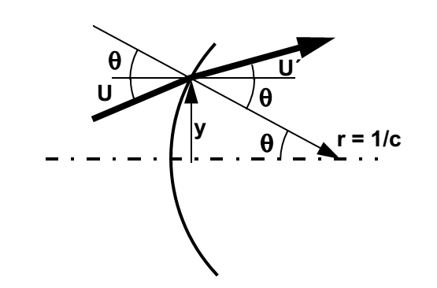
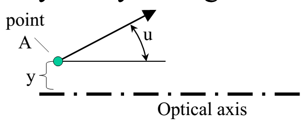
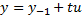
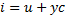
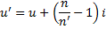
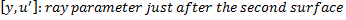
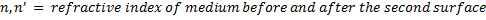
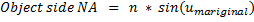
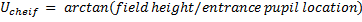

There are three commonly used methods for paraxial ray tracing, namely: yni method, ynu method and matrix method. In all paraxial ray tracing methods, a ray at a point is given by its height from the optical axis, y, and its slope (tangent of angle), u (for small angles u can be angle in radians).

Although ynu method is commonly used for efficient ray tracing by hand or in simple programs such as excel sheets, some commercial ray tracing programs use yni method as it leads to computation of the paraxial incidence angle as an intermediate result of the ray trace. So, the yni method is used to develop paraxial ray tracing module for our ray tracing toolbox. In paraxial approximation the equations for conic sections becomes that of spherical surfaces.
The important formulas employed for yni ray tracing method are:





In addition to the basic yni ray trace function, the paraxial ray tracing module includes functions to determine:
The system aperture is given by either the object space NA or the entrance pupil diameter and the stop surface index is set by the user using the system configuration dialog.
To determine location of entrance pupil
Once the location of entrance pupil is determined, the object side numerical aperture and the entrance pupil diameter can computed from each other if one is already known.

The chief ray angle for a given field height can be computed by projecting a ray from the field point to the center of entrance pupil diameter.

Image space numerical aperture can be computed from the marginal ray angles in the image space. And the exit pupil can be located following similar method as for entrance pupil but now tracing the paraxial ray from stop in forward direction to the image side.
The back focal length and effective focal lengths can be computed by tracing a paraxial ray which is parallel to the optical axis and determining its intersection point with the optical axis in the image space.
Created with the Personal Edition of HelpNDoc: Free help authoring environment